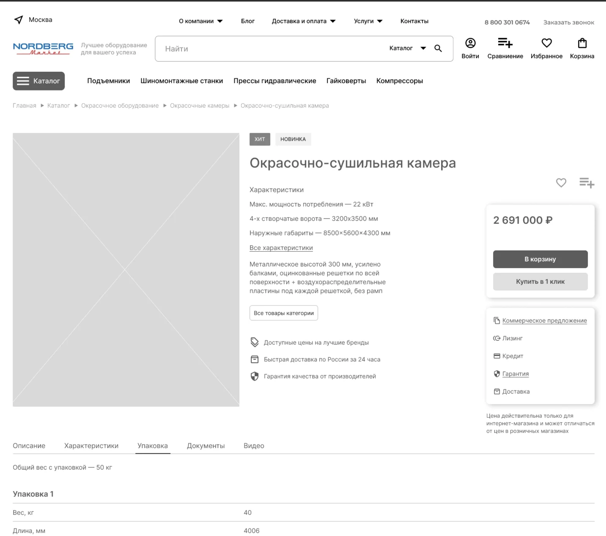
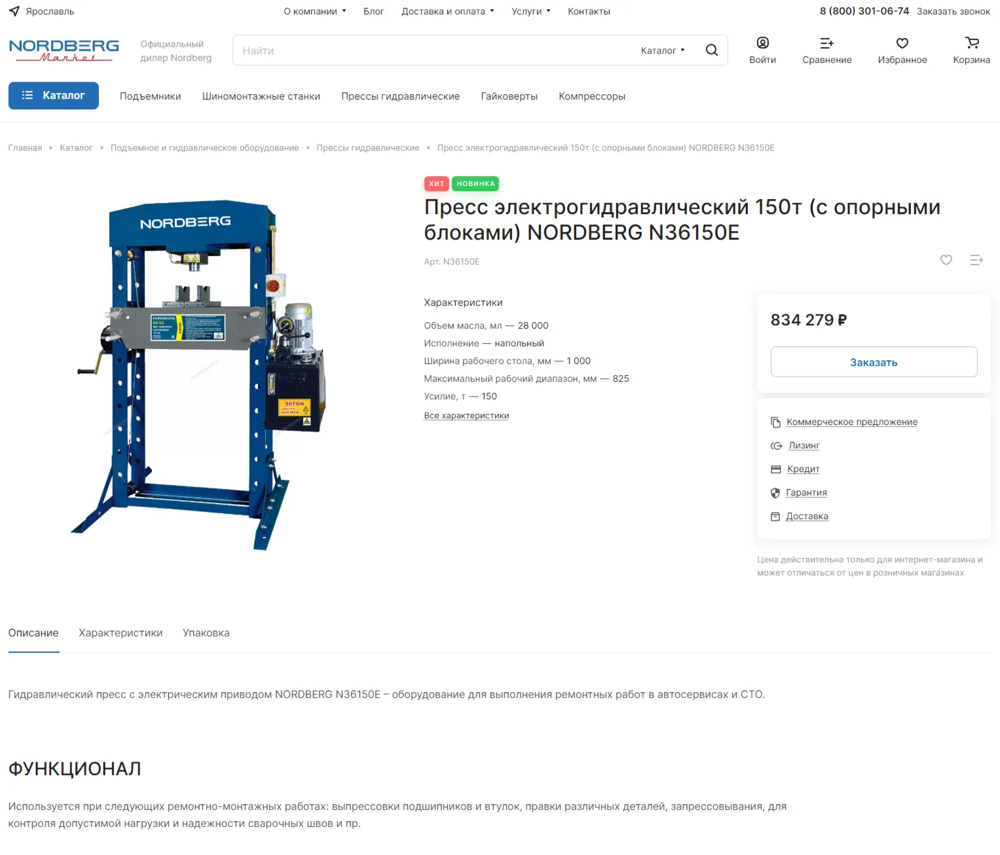
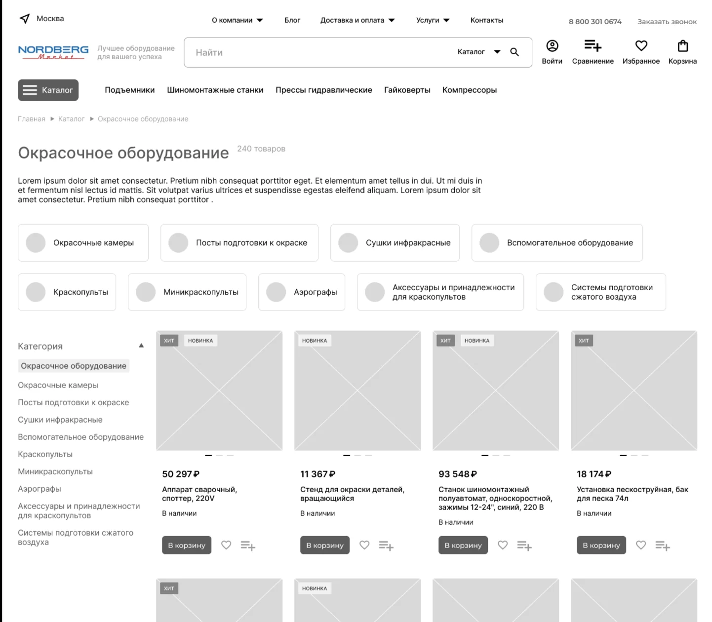
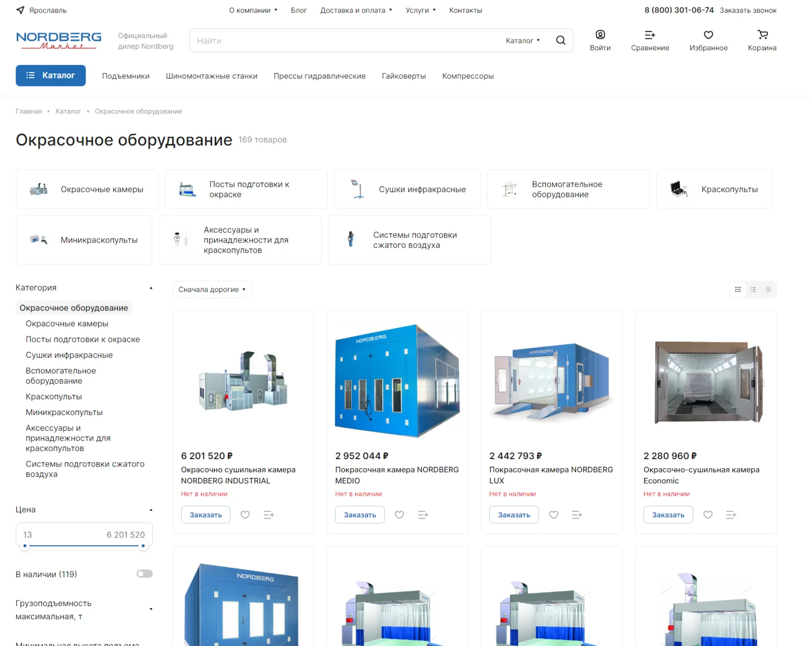

С чего начался проект
Клиент больше 20 лет продаёт профессиональное оборудование для автосервисов и станций техобслуживания. У компании уже был сайт, но для марки Nordberg она решила открыть отдельный магазин. Покупатель должен был иметь возможность найти нужный станок, оформить доставку и оплатить заказ онлайн.
Первую версию магазина делал другой подрядчик. Он не закончил импорт товаров, и разработка остановилась. Когда клиент обратился к нам, задача выглядела как обычная работа техподдержки: разобраться, почему не загружается ассортимент, и довести магазин до запуска.
Почему пришлось менять шаблон
Сначала мы заново настроили загрузку товаров на старом сайте и убедились, что данные попадают в каталог. Затем обновили 1С-Битрикс. Выяснилось, что прежний шаблон не поддерживает современные версии PHP. Попытки восстановить его по частям не дали нужного результата.
Для новой версии магазина выбрали «Аспро: Лайтшоп». Подготовили прототипы главной, каталога и карточки товара, описали требования и убрали из шаблона элементы, которые магазину не требовались. Рабочую схему импорта адаптировали под новый каталог.


Как в карточке товара появились несколько упаковок
В данных поставщика одному товару могли соответствовать несколько упаковок, каждая со своим весом. Покупателю оборудования важно понимать, какой груз ему предстоит получить. Мы доработали импорт и карточку товара: теперь она показывает все упаковки и их общий вес.
Появление товара в каталоге запускает ещё одно правило. Первые 30 дней позиция видна в «Новых поступлениях». Потом она исчезает из подборки новинок и остаётся доступной в своей категории.




Как покупатель выбирает регион и оформляет заказ
Шаблон умел определять регион посетителя, но справочник городов и областей нужно было заполнить отдельно. Подключили модуль импорта регионов, чтобы загрузить их сразу и избежать ручного ввода.
Для доставки настроили модули «Деловых Линий» и DPD. Для оплаты картой подключили эквайринг. Так покупатель может выбрать оборудование из каталога и оформить заказ на сайте.




Что получил клиент
Вместо незавершённого проекта у клиента появился работающий магазин Nordberg на 1С-Битрикс. Ассортимент загружается из данных поставщика, новые позиции автоматически попадают в подборку, а в карточках видны сведения об упаковках.
После запуска Редстар взял магазин на техническую поддержку. На момент подготовки исходного материала команда работала над выгрузкой товаров на Яндекс Маркет и меняла сортировку каталога.